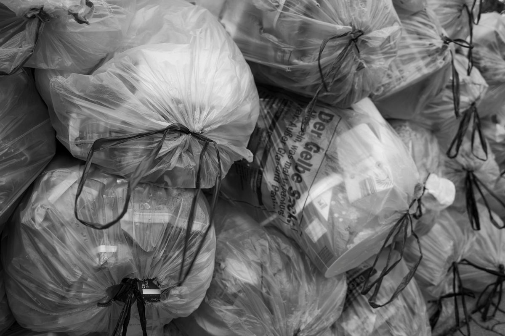
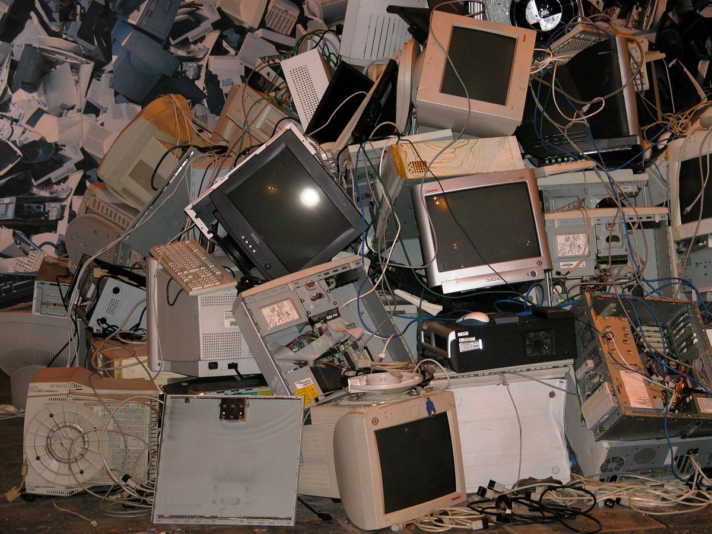

Organik

Organik
Sampah dari bahan alami yang mudah terurai oleh mikroorganisme.
Kenali ragam sampah, contoh, dan cara menanganinya dengan benar.
Menampilkan 8 dari 8 jenis sampah Menampilkan 1 dari 8 jenis sampah Menampilkan 5 dari 8 jenis sampah Menampilkan 1 dari 8 jenis sampah Menampilkan 1 dari 8 jenis sampah
Sampah dari bahan alami yang mudah terurai oleh mikroorganisme.
Sampah dari bahan buatan yang sulit terurai, tetapi banyak yang dapat didaur ulang.

Kemasan, kantong, dan botol plastik yang sangat lama terurai dan mudah mencemari laut.
Kertas dan kardus relatif mudah didaur ulang selama kering dan tidak berminyak.
Botol dan toples kaca dapat digunakan ulang atau dilebur menjadi produk kaca baru.
Kaleng dan besi bekas bernilai ekonomi tinggi dan bisa didaur ulang berkali-kali.
Limbah yang mengandung zat berbahaya bagi manusia dan lingkungan jika dibuang sembarangan.
Perangkat elektronik bekas (e-waste) mengandung logam berharga sekaligus zat berbahaya.
Sampah dari bahan alami yang mudah terurai oleh mikroorganisme.
Waktu urai: 2 minggu - 3 bulanSampah dari bahan buatan yang sulit terurai, tetapi banyak yang dapat didaur ulang.
Waktu urai: Puluhan hingga ratusan tahun
Kemasan, kantong, dan botol plastik yang sangat lama terurai dan mudah mencemari laut.
Waktu urai: Ratusan tahun
Kertas dan kardus relatif mudah didaur ulang selama kering dan tidak berminyak.
Waktu urai: 2 - 6 bulanBotol dan toples kaca dapat digunakan ulang atau dilebur menjadi produk kaca baru.
Waktu urai: Lebih dari 1 juta tahunKaleng dan besi bekas bernilai ekonomi tinggi dan bisa didaur ulang berkali-kali.
Waktu urai: 50 - 200 tahunLimbah yang mengandung zat berbahaya bagi manusia dan lingkungan jika dibuang sembarangan.
Waktu urai: Beragam, dampak racun bisa bertahan lamaPerangkat elektronik bekas (e-waste) mengandung logam berharga sekaligus zat berbahaya.
Waktu urai: Puluhan hingga ratusan tahun